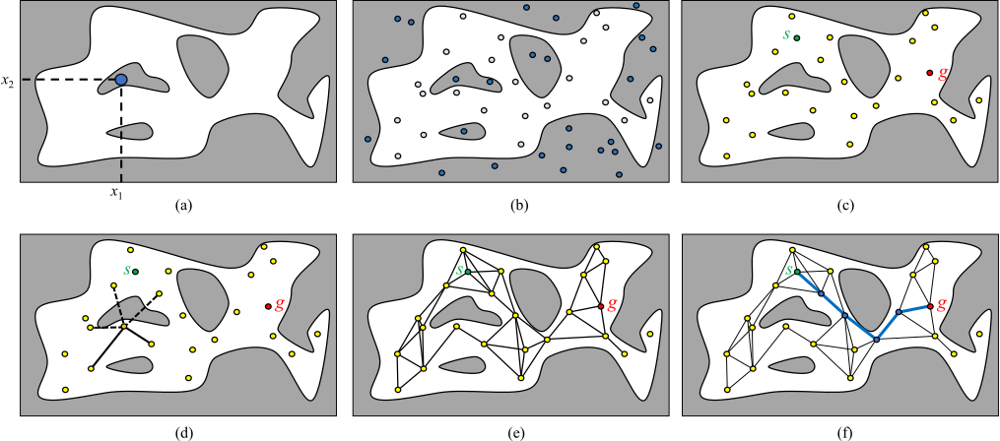
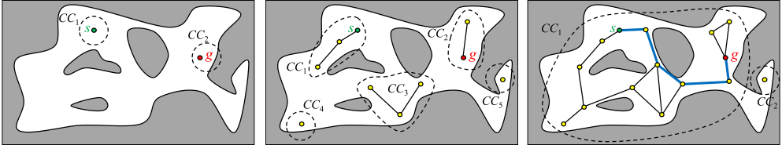
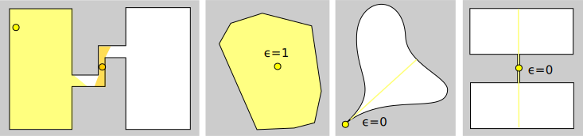
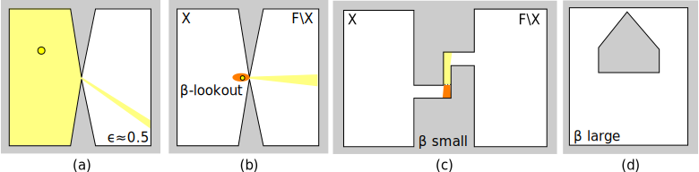
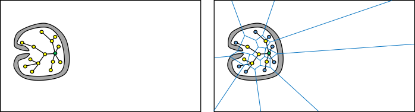
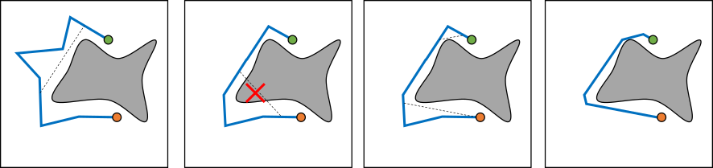
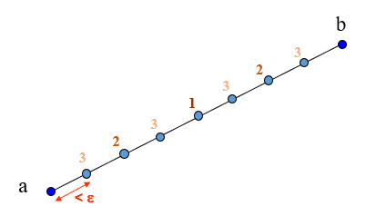
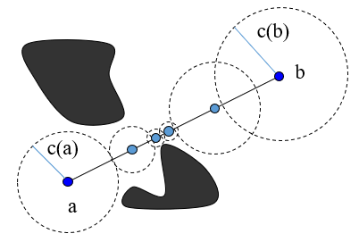

The algorithms we have studied for the 2D case do not apply to many other systems of interest: quadcopters that avoid obstacles in 3D, articulated robot arms, multi-robot teams, and robots that manipulate objects. The main issue that we are faced with is that previous geometric planning methods require the ability to explicitly perform computations about the shape of obstacles. In higher-dimensional configuration spaces, this is rather challenging. This chapter will consider how to address problems with configuration spaces of arbitrary dimension. (In fact, these algorithms can also be applied to problems of lower dimension too --- in low-dimensional spaces, planning is fairly easy!)
Geometric planning methods like visibility graphs and cell decomposition can often be extended to 3D environments with polyhedral obstacles with some work. There are also algorithms for path planning with constraints expressed as semi-algebraic sets that work in spaces of arbitrarily high dimension, but their running time is exponential in dimensionality, and are more of an intellectual curiosity since they have never been practically implemented. Grid search planners can also be extended to higher dimensional grids, but they must in the worst case explore an exponential number of grid vertices.
In fact, it has been proven that even feasible path planning is NP-hard in the case of articulated $n$-joint robots. Surprisingly, optimal path planning in the presence of 3D polygonal obstacles is also NP-hard in the number of obstacle vertices! This dramatic increase in the complexity of exact algorithms in dimensions 3 and higher has led to the development of several approximate methods, which are discussed in detail in this chapter.
Implicit C-obstacle representation¶
C-obstacles for general articulated robots are in general, even more complex than they were in 2D and 3D. As a result, most motion planning algorithms outside of planar environments do not attempt to build an explicit representation of C-obstacles, but instead opt to perform Boolean feasibility queries in which the collision status of a robot is queried for a given configuration: in other words, we can test whether $q\in \mathcal{C}O$ for a specific configuration $q$, but we do not have a representation of any points on $\partial \mathcal{C}O$. Specifically, the user of a planner defines a subroutine as follows: $$Feasible(q) = \left\{ \begin{array}{ll} T & \text{ if $q$ is in the free space} \\ F & \text{ if $q$ is in the forbidden region} \end{array} \right.$$ A planner can then call this subroutine to probe whether a configuration is feasible. Since this will be called thousands or millions of times, fast planning in high-dimensional spaces requires efficient collision tests as described in Chapter 7.
Often, we will also need to check whether a motion is feasible as well, usually a short segment of a path $\overline{pq}$ between configurations $p,q \in \mathcal{C}$. The process is called a visibility query in the case of a straight line path, and can be a user-defined subroutine or performed by the planner. The query is specified as follows:
$$Visible(p,q) = \left\{\begin{array}{ll} T & \text{ if $\overline{pq}$ is completely inside the free space} \\ F & \text{ if $\overline{pq}$ intersects the forbidden region} \end{array} \right.$$In general the process of checking motions for collision is known as dynamic collision checking. The simplest method for doing so is simply to take small steps along the path and perform feasibility queries at each configuration. More details about this and other techniques are described in the section below.
In addition to the Boolean feasibility query computational model, we also consider some planners that exploit knowledge encoded in an implicit function model $\mathcal{C}O = \{ q \quad |\quad f(q) \leq 0 \}$. For example, one such implicit function $f$ may be the signed distance in workspace between the robot and obstacles. (Specifically, this would return the distance when there is no collision, and the negative of the penetration depth when collision exists.) For most complex geometric models it is far more computationally expensive to perform distance and penetration depth computations than collision queries. As a result there is a trade off between using a computational query that provides richer information vs the added complexity of invoking the query.
Grid Search and the Curse of Dimensionality¶
Let us begin by considering the case of extending grid search to $n$-D space. It is fairly straightforward to build such a grid, and collision checking for arbitrary $n$-D robots at configurations or paths can be performed relatively quickly (we shall describe methods for doing so below). However, the number of vertices that may need to be explored grows exponentially with the dimension of the space. This growth rapidly overwhelms the available computational resources, both in time and memory.
It is helpful to get a sense of the absolute scale of exponential increase to appreciate how difficult this makes the problem. Consider creating a grid in a 6-D unit hypercube $[0,1]^6$ with resolution $h$ on each axis. The number of vertices in the grid is listed in the right of the below table. Clearly, at high resolutions it would be impractical to search the entire grid.
| Resolution $h$ | # vertices |
|---|---|
| 0.5 | 64 |
| 0.25 | 46,656 |
| 0.1 | 1,000,000 |
| 0.05 | 64,000,000 |
| 0.025 | 46,656,000,000 |
| 0.01 | 1,000,000,000,000 |
Let us also fix a relatively manageable resolution, say 0.1, and observe what happens as dimension varies. The following table shows how many vertices are in a grid of variable dimension $[0,1]^d$.
| Dimension $d$ | # vertices |
|---|---|
| 2 | 100 |
| 3 | 1,000 |
| 6 | 1,000,000 |
| 8 | 100,000,000 |
| 10 | 10,000,000,000 |
| 15 | 1,000,000,000,000,000 |
| 20 | 100,000,000,000,000,000,000 |
Yikes! Even if feasibility checking and visibility checking were super-fast, this becomes impractical for use in dimensions of around 8. This problem is generally known as the curse of dimensionality.
Besides the combinatorial explosion in the number of grid cells needed to span a space, there are several other odd effects in high dimensional spaces that are counterintuitive to our experience in 2D and 3D spaces. Examples include the fact that the volume of a hypersphere drops dramatically as dimension increases. In fact the volume of a unit hypersphere approaches 0 as $d\rightarrow \infty$! This implies that almost all points are far in a high dimensional space, for most reasonable definitions of "far". Another effect is that the complexity of a polytope grows dramatically. Consider a polytope in $d$-D space with $n$ faces, such as that defined by a linear equality $A x \leq b$, with $A$ an $n \times d$ matrix and $b$ an $n$-vector. The number of vertices of the polytope is $O( {n \choose d } )$, which grows exponentially in $n$ and $d$. As a result, the complexity of the free space can be exponential even for simple constraint representations.
Since this "curse" appears so often in computational problems, it is of great interest (and often surprising) to find algorithms that circumvent these limitations. However, they tend to trade-off computational complexity for other limitations. One example is Monte-Carlo integration, in which a sum of function values of randomly sampled points are used to estimate the integral of a function: $$\int_a^b f(x) dx \approx \frac{b-a}{N} \sum_{i=1}^N f(x_i) \label{eq:MonteCarlo1D}$$ where the points $x_1,\ldots,x_N$ are sampled uniformly at random from the range $[a,b]$. The approximation error of this estimate, assuming $f$ is well-behaved, is on the order of $O((b-a)/\sqrt{N})$.
Monte-Carlo integration can be generalized to higher dimensional functions. If $B$ is an axis-aligned, $n$-dimensional box $[a_1,b_1]\times\cdots\times[a_n,b_n]$, then the integral over $B$ can be approximated $$\int_B f(x) dx \approx \frac{|B|}{N} \sum_{i=1}^N f(x_i) \label{eq:MonteCarloND}$$ with $|B|=\prod_{i=1}^n (b_i-a_i)$ the volume of $B$ and $x_1,\ldots,x_n$ is a uniform sampling over $B$. Specifically, a uniform sampling random variables $\epsilon_i \in [0,1]$ uniformly at random, and sets $$x_i = a_i + \epsilon_i (b_i - a_i).$$ The approximation error of ($\ref{eq:MonteCarloND}$) is very similar to the 1D case: $O(|B|/\sqrt{N})$. Observe that the dimensionality $n$ did not appear at all in this equation!
The sampling-based planning methods introduced in this chapter are somewhat inspired by Monte-Carlo integration. In particular,their performance is not immediately affected by C-space dimensionality. This is extremely appealing!
However, like Monte-Carlo methods, these wins come at a price. In Monte-Carlo sampling, there is a hidden constant in the approximation error that depends on the variance of $f$ across the domain. Likewise, sampling-based planning induces a probabilistic chance of failure, and the risk of failure is highly dependent on the visibility properties of the free space. We will investigate these concepts more formally below.
Sampling-based motion planning¶
The most popular set of techniques for motion planning on robots with 5 or more DOFs is the class of sampling-based motion planners, most notably the probabilistic roadmap (PRMs) and rapidly-exploring random tree (RRTs) planners. All such techniques are roadmap methods that build a network of paths in C-space, but they use different strategies for doing so.
There are three general reasons for their popularity:
The same algorithm can be generalized to new problems of arbitrary dimensionality simply with changes of the $Feasible(q)$ and $Visible(p,q)$ subroutines.
They often produce paths quickly for high-dimensional problems that are not too-maze like, and given enough time can eventually solve problems of arbitrary complexity (probabilistic completeness).
They can be implemented fairly quickly by a student competent in algorithms and graph data structures.
By "high-dimensional" we mean that sampling-based planners can routinely solve problems in spaces of approximately 10D, and with tuning (or luck) can also find feasible paths in dozens or even hundreds of dimensions. However, these planners are not a "magic bullet", and a deeper analysis of their performance characteristics — both algorithmically and as they relate to the visibility properties of the underlying planning problem — is required to understand when they can be used effectively.
Probabilistic roadmaps¶
Probabilistic roadmaps (PRM) are an approximate roadmap of the robot's free space built by randomly sampling free connections and attempting connections between them. The roadmap can then be searched as usual for a path from the start to the goal. The basic algorithm for constructing a PRM is as follows:
Sample $N$ configurations at random from the C-space (Figure 1.a--b).
Add all feasible configurations and the start and goal to the roadmap. These are known as milestones. (Figure 1.c)
Test pairs of nearby milestones for visibility, and add visible edges to the roadmap. (Figure 1.d--e)
Search for a path from the start to the goal. (Figure 1.f)

It can be shown that the method is probabilistically complete, in that if it finds a path, the path will be feasible. If it does not find a path, then this answer might be incorrect. However, the chance of this incorrect answer decreases to 0 as $N$ increases, given some relatively mild assumptions on the shape of the free space. Another useful property is that the likelihood of success is not directly dependent on dimensionality, but rather then visibility properties of the free space. As a result, it can reliably solve high-dimensional problems that have good visibility properties, and perform poorly in low-dimensional problems that have poor visibility properties (such as narrow passages).
Algorithm and key parameters¶
The basic PRM algorithm is given in Algorithm Basic-PRM. The first for loop adds any sampled feasible configurations to the roadmap $(V,E)$. The second for loop checks for pairs of "nearby" milestones, and adds edges as long as the path between them is collision-free.
- $V \gets \{ s, g \}$.
- $E \gets \{ \}$.
- for $i=1,\ldots,N$ do
- $q \gets Sample()$
- if not Feasible($q$) then return to Line 3.
- Add $q$ to $V$ (add $q$ as a new milestone)
- for all $p \in near (q,V)$
- if Visible($p,q$) then
- Add $(p,q)$ to $E$.
- Search $G = (V,E)$, with Cartesian distance as the edge cost, to connect $s$ and $g$.
- return the path if one is found.
There are two key subroutines to tune, which greatly affect running time and performance:
The sampling distribution over $\mathcal{C}$ (the $Sample()$ subroutine in Line 4).
The method for determining nearby milestones in Line 7.
Since at most $N$ milestones will be added to the roadmap, it is important to place as many as possible inside $\mathcal{F}$ at critical locations that aid the planner in connecting the start and goal. The $Sample()$ subroutine can be tuned to do so. First, in order to have a nonnegligible chance of sampling a milestone in a useful location, PRMs require that the C-space is bounded. In the most basic uniform distribution it is assumed that $\mathcal{C}$ is a box $[a_1,b_1]\times \cdots \times [a_n,b_n]$, and $Sample()$ samples configurations uniformly across the box. However, there are other methods for improving performance, which we shall discuss later.
If we were to check all edges in the roadmap, this would lead to a total of $O(N^2)$ visibility checks. This can be rather computationally expensive for large $N$, and long paths are much more likely to collide than short ones. Hence the idea of restricting visibility tests only to "nearby" points is a fast way of determining a small set of potential edges that have a better chance of being feasible. To do this, we need first to determine a distance metric $$d(p,q)$$ that measures some notion of path length. The simplest form might measure Euclidean distance, but for configuration spaces that blend translation and rotation it is often more suitable to use a weighted geodesic metric.
Once a metric is defined, most frequently one of two methods are employed to calculate the set of milestones "near" $q$:
The $k$-nearest neighbors of $q$ in $V$.
The $R$-neighborhood: all milestones in $V$ within some radius $R$ of $q$.
Using fast nearest neighbors data structures, which will be described later, the $k$-nearest neighbors can be computed in $O(k + \log N)$ time, and the $R$-neighborhood can be computed in $O(h + \log N)$ time, where $h$ is the number of points returned. In any case, this usually saves a huge amount of time because $k$, $h$, and $\log N$ are much smaller than $N$, and distance queries are fast. If we are careful not to double-check the reverse of an edge that has been checked before, at most $kN/2$ (or $hN/2$) edges will be checked in the roadmap.
Incremental variant¶
As written, the basic PRM algorithm places all of the (up to $N$) samples and edges into the roadmap first before performing search. But in easy problems, perhaps fewer samples were needed to construct a roadmap that contained a solution -- say, the first $M << N$. If all we wanted was a feasible path from $s$ to $g$, it would be foolish to continue adding unnecessary points! Fortunately, it is straightforward to implement an incremental variant of PRM with very little additional cost. (This is in fact the typical variant used for PRM planning queries.)

Algorithm Incremental-PRM gives an implementation of Incremental-PRM using a special data structure to determine each of the connected components of the graph. A connected component consists of all milestones that are mutually connected by any path.
Algorithm Incremental-PRM(s,g,T)
- $V \gets \{ s, g \}$.
- $E \gets \{ \}$.
- $CC[s] \gets \{s\}$.
- $CC[g] \gets \{g\}$.
- while time-elapsed $< T$ do
- $q \gets Sample()$
- if not Feasible($q$) return to Line 3.
- Add $q$ to $V$
- $CC[q] \gets \{q\}$ (for now, $q$ gets its own connected component)
- for all $p \in near (q,V)$
- if Visible($p,q$) then
- Add $(p,q)$ to $E$.
- Merge $CC[p]$ and $CC[q]$ (merge connected components of connected edge)
- if $g \in CC[s]$ then (start and goal in same connected component)
- return the shortest path in $G = (V,E)$ between $s$ and $g$.
- return "no path"
Every time an isolated milestone gets added to the graph (Lines 3, 4, and 9), it gets assigned a connected component in the data structure $CC$. The connected components are maintained as more edges are added to the roadmap (Figure 2). Once $s$ and $g$ are in the same connected component (Line 14), the algorithm stops. In Line 5, the main loop is stopped by a time limit $T$ rather than an iteration limit. This means the overall running time can be controlled more precisely, which is useful if the robot needs to generate a path within a certain deadline.
To give more details about the $CC$ data structure, it can be thought of as a map from each milestone to its connected component: that is, $CC[v]$ set of milestones $w \in V$ that can be reached from $v$ via a path in the $G=(V,E)$. After each change of $G$, $CC$ is updated to reflect any changes in connected component. The difficulty is that each time an edge gets added, the connected components of those two points need to be merged (Line 13). If this were done in a naive fashion (say, by storing a list of connected milestones per milestone), it could take an extremely long time ($O(|V|)$, where $|V|$ is the number of vertices currently in $V$) for each update. Fortunately, there is a special disjoint set (aka union-find) data structure that is very fast at maintaining these sets. With this data structure, it has been proven that a merge takes O($\alpha(|V|)$) time on average, where $\alpha(n)$ is a very, very slow growing function of $n$ called the inverse Ackermann function. It grows so slowly, in fact, that for all practical values of $n$ it is less than 5, and hence this can be considered a constant. Overall, to perform $|E|$ edge insertions the overhead introduced by this data structure is $O(|E| \alpha(|V|))$, which is essentially $O(|E|)$, and hence no additional asymptotic running time penalty is incurred by the incremental algorithm.
Empirical performance¶
The performance of PRMs in practice can be quite variable from problem to problem, and even run to run (depending on the initial seed of a random number generator). In typical problems, the probability of successfully finding a path increases as $N$ increases. After a "burn in" phase with low $N$ where there is no change of finding a solution, the probability of success rises fairly sharply before tapering off. The slope of this tapering off depends on the visibility characteristics of the problem, which we shall discuss below.

The average time needed for incremental PRM to solve a given problem depends on a number of factors. Firstly, efficient collision queries are essential, since thousands or millions of queries will be made during a "reasonably" sized run $(N=$1,000 to 100,000, usually). Second, the nearness criterion (either number of neighbors $k$ or radius $R$) should be set so that a small number of edges are checked, but not too small.
The path quality of PRM solutions can be quite variable. If there exists a suboptimal wide passage in $\mathcal{F}$ while the optimal passage is narrow, incremental PRM will find the suboptimal one first (with very high likelihood). Basic PRM will find the suboptimal one when $N$ is low, but does have a chance to find the optimal one once $N$ is large enough. There is also an issue of jerkiness of the produced path, which tends to be more pronounced with incremental PRM is used, or fewer neighbors are connected. We shall see strategies to address the jerkiness of PRM paths when discussing optimizing roadmaps and shortcutting.
Analysis of visibility and performance¶
The running time of PRM is composed of $N$ configuration collision checks, $kn$ edge collision checks (for the $k$-nearest-neighbor variant), and $n$ nearest neighbor querie-. Let's assume the likelihood of finding a sampling a configuration is constant and nonzero, and that configuration and edge collision checks are $O(1)$. Assuming brute-force nearest-neighbor queries, the overall running time is $O(n^2)$. However, using more sophisticated nearest-neighbor queries, this can be reduced to $O(n \log n)$.
The basic PRM and incremental PRM algorithms have been shown to be probabilistically complete under relatively mild conditions. This implies that the likelihood that the roadmap connects the start and goal (assuming they are connected in $\mathcal{F}$) approaches 1 as more milestones are added to the roadmap. But how quickly do they converge? A key factor in the theoretical analysis (and empirical performance) of a PRM are the visibility properties of the free space. Using the language of unfavorable / favorable visibility properties, we can mathematically formalize the intuitive notions of a "narrow passage" and "wide passage". To do this, we will need to introduce several definitions.
First, we define a measure $\mu(X)$ that assigns any free space subset $X \subseteq \mathcal{F}$ a nonnegative scalar. Measures have a whole host of requirements, but intuitively, $\mu(X)$ measures the volume of $X$. (Note that if $X$ has lower dimension than $\mathcal{C}$, then $\mu(X)=0$; such sets include points, lines, etc.)
Next, we define the visibility sets.
The Visibility set of a free configuration $q$ is the subset $\mathcal{V}(q) \subseteq \mathcal{F}$ of points that are visible from $q$. Specifically, $\mathcal{V}(q) = \{ q'\in \mathcal{F} \,|\,\text{IsVisible}(q,q')\}$.
It is typically useful to think of visibility as respecting a given connection radius, i.e., the constant $R$ in an $R$-neighborhood connection strategy. We can also similarly define the visibility set of a set of points as the union of the visibility sets of each point: $\mathcal{V}(X) = \{ q' \in \mathcal{F}\,|\,q' \in \mathcal{V}(q) \text{ for some }q\in X \}$.

Intuitively, the milestones in a PRM $(V,E)$ with $n$ milestones are likely to connect to a new milestone if the visibility set of $V$ is large. Formally, if a new milestone $q$ is sampled uniformly at random from $\mathcal{F}$, then the probability that it can be connected to $V$ is exactly $\mu(V)/\mu(\mathcal{F})$. Since visibility is symmetric, the probability that $q$ cannot be connected to any of the milestones in $V$ is equal to the probability that $q$ cannot be connected to any of $n$ random configurations. Since the milestones are drawn independently at random, this probability is $(1-\mu(\mathcal{V}(q))/\mu(\mathcal{F}))^{n}$. Hence, obtain the result:
The probability that a configuration $q$ can be connected to a PRM with $n$ milestones is $Pr(q\text{ connected}) = 1 - (1-\mu(\mathcal{V}(q))/\mu(\mathcal{F}))^{n}$, assuming that $q$ and each of the milestones is drawn at random from $\mathcal{F}$.
Note that this value rapidly approaches 1 as $n$ increases, as long as $\mu(\mathcal{V}(q))>0$.
What this also shows is that if visibility properties are not uniform across the free space — that is, visibility sets are small in some areas (narrow passages) and large in others (wide passages) — PRMs will have a harder time connecting milestones in narrow passages. This is because the speed at which $Pr(q\text{ connected})$ approaches 1 is dependent on $\mu(\mathcal{V}(q))/\mu(\mathcal{F})$, with larger values converging to 1 much faster than smaller values. (On average, $\mu(\mathcal{F})/\mu(\mathcal{V}(q))$ milestones will be needed in $|V|$ before $q$ lies in the visibility set of $V$.)
We can analyze this situation further using bounds that depend on the shape of the free space. Suppose that the minimum volume of any configuration's visibility set is $\epsilon = \inf_{q\in \mathcal{F}}\mu(\mathcal{V}(q))/\mu(\mathcal{F})$. Then, for any point $q$ sampled at random, the probability that it can be connected to a given point $q'$ is at least $\epsilon$. If $\epsilon > 0$, we say that the free space is $\epsilon$-good.
Since the visibility bound $\epsilon$ holds across the space, we can see that the probability that any $q$ is in the visibility set of $V$ is at least $1 - (1-\epsilon)^{n}$. Keep in mind that we have not mentioned dimensionality $d$ in this discussion and only volumetric ratios, so the performance here has no direct relation to $d$. However, note that with a fixed connection radius $R$, the volume of any visible set cannot be greater than $O(R^d)$ (the volume of an $R$-ball), and hence there is an implicit exponential dependence of performance on dimension. This also shows that to improve a PRM's visibility set in spaces of higher dimension, it is necessary to set the connection radius $R$ relatively large.
Is $\epsilon$-goodness all that we need to analyze PRM performance? No! Notice that we have only addressed the problem of whether a point can be connected to a single milestone in the PRM, but not whether it can reach all other reachable milestones with a feasible path. Specifically, we need to examine whether milestones in the same connected component of $\mathcal{F}$ are also in the same connected component of $(V,E)$. For this, we need a concept called expansiveness. Intuitively, a space $\mathcal{F}$ has high expansiveness if for any partition of $\mathcal{F}$ into two sets $A$ and $B$, a significant portion of $A$ can see a significant portion of $B$. This means that the likelihood that one or more edges of the PRM cross any boundary in $\mathcal{F}$ increases as more milestones are added.

More formally, we describe a simplified version of the argument in Hsu et al 97. Let us define the $\beta$-lookout of a subset $X\subset \mathcal{F}$ as the subset of configurations in $X$ that can see an $\beta$-fraction of the complement of $X$. Mathematically, this is defined as follows:
The $\mathbf{\beta}$-lookout of $X$ is the set $\beta\text{-lookout}(X) = \{ q \in X\,|\,\mu(\mathcal{V}(q)\cap \bar{X}) \geq \alpha \mu(\bar{X}) \}$, where $\bar{X} = \mathcal{F} \setminus X$ is the complement of $X$.
We define the expansiveness $\beta$ of $\mathcal{F}$ as the largest value such that, for any partition $\mathcal{F} = X\cup \bar{X}$, the volume of $\beta$-lookout$(X)$ is at least $\beta \mu(X)$. If $\beta > 0$, then we say that the free space is $\beta$-expansive.
(Note that $\beta \leq \epsilon$, since each point must see a $\beta$ fraction of its complement.)
It has been proven that for any $\beta$-expansive space, the probability that a roadmap fails to connect the start and the goal with a feasible path drops exponentially toward 0 (provided that they are in the same connected component of $\mathcal{F}$). Specifically, a bound can be formulated in the following form:
$$Pr(\text{failure} | n\text{ milestones}) \leq c(\beta) e^{-d(\beta) n}.$$Moreover, the convergence constants are directly related to $\beta$, with larger values of $\beta$ leading to faster convergence (smaller $c$ and larger $d$). Exponential convergence bounds are favorable because they show that the expected running time and its variance are bounded, which is not true for all convergence rates (consider, for example, the bound $Pr(\text{failure} | n) \propto 1/n$).
Intuitively, the method of proof considers the idea of a linking sequence of regions connecting $s$ and $g$, such that a milestone is sampled in each region, then $s$ and $g$ will be connected. If the space is expansive, then it can be shown that such a linking sequence exists, has finite length, and the regions have non-zero measure. The details of these proofs are out of the scope of this book.
PRM variants¶
Rapidly-Exploring Random Trees (RRTs)¶
One of the most popular PRM variants is the Rapidly-Exploring Random Tree (RRT) algorithm, which grows a tree rather than a graph. Originally developed for kinodynamic planning, it is easily adapted to kinematic planning as well. The specific variant we will discuss is called RRT-Connect, which is a bidirectional search.
RRT-Connect grows two trees of feasible paths, one rooted at the start and the other at the goal. At each iteration, both the start and the goal trees are extended toward a randomly sampled configuration. Then, if the trees are close enough, a connection will be attempted between them. If connected, the joined trees contain a unique path from the start to the goal.
- $T_s \gets \{ s \}$.
- $T_g \gets \{ g \}$.
- for $i=1,...,N$ do
- $q_{rand} \gets Sample()$
- $q_e \gets$Extend-Tree$(T_s,q_{rand},\delta)$ (extend start tree at most $\delta$ distance toward $q_{rand}$)
- $q_e^\prime \gets$Extend-Tree$(T_g,q_{rand},\delta)$ (extend goal tree at most $\delta$ distance toward $q_{rand}$)
- if $d(q_e,q_e^\prime) \leq \delta$ and Visible($q_e,q_e^\prime$) then (trees are close enough)
- Add edge $q_e\rightarrow q_e^\prime$ to connect $T_s$ and $T_g$
- return the path from $s$ to $g$
- return "no path"
Algorithm Extend-Tree$(T,q_{rand},\delta)$
- $q_{near} \gets Nearest(T,q_{rand})$
- $q \gets q_{near} + \min{1,\frac{\delta}{d(q_{rand},q_{near})}}(q_{rand}-q_{near})$
- if Visible$(q_{near},q)$ then
- Add edge $q_{near}\rightarrow q$ to $T$.
- return $q$.
- return $q_{near}$.
Specifically, the pseudocode is listed in Alg. RRT-Connect. $T_s$ and $T_g$ denote the trees rooted at the start and goal, respectively. In Line 3, a random configuration is drawn, and in Lines 4 – 5, the trees are extended toward it along a straight line path using the Extend-Tree subroutine. RRT has a key parameter $\delta$, which a limit to how far a tree can be extended on each step. In other words, every edge in each tree has length no more than $\delta$. Also, if the two extended milestones are within distance $\delta$, they are connected. For small values of $\delta$, it is more likely for each extension to succeed, but the tree makes slower progress in exploring the free space.
Pseudocode for Extend-Tree is given in Alg. Extend-Tree. It first performs a nearest-neighbor query on the milestones in the given tree to determine a milestone $q_{near}$. It then extends a short path no more than distance $\delta$ toward the destination $q_{rand}$. If this edge is visible, then it is added to the tree.
Unlike PRMs, RRTs do not use the configurations coming from the $Sample()$ function directly, nor do they attempt more than one edge connection per iteration. Hence, they sample points in a different distribution than PRMs. But what is this distribution? We first introduce the concept of a Voronoi diagram, which defined for some set of points $X = \{\mathbf{x}_1,\ldots,\mathbf{x}_n\}$. The Voronoi diagram is a partition of the space $\mathcal{C}$ into Voronoi cells , one per point. The cell $C_i$ corresponding to a point $\mathbf{x}_i$ is the subset of $\mathcal{C}$ for which $\mathbf{x}_i$ is the closest point. In other words, $$C_i \equiv \{ \mathbf{x} \in \mathcal{C}\, | \, i = \arg \min_{i=1,\ldots,n} d(\mathbf{x},\mathbf{x}_i) \}$$ RRT is said to employ a Voronoi bias strategy because each milestone in a tree is selected for expansion (i.e., be the nearest node to $q_{rand}$) with probability proportional to the volume of its Voronoi cell. This means that milestones that are closer to unexplored areas of $\mathcal{C}$ have a higher likelihood of being expanded. Moreover, the extended milestone will have a higher likelihood of extending the tree in unexplored directions (and hence the term rapidly exploring applies here).
RRTs are appealing because tree data structures are a bit simpler to implement than graphs. Also, the RRT explores locally first, so if the start and goal are nearby, the RRT may do significantly less work than a PRM. However, RRT performance is generally more sensitive to the choice of a distance metric, and is generally better at exploring than refining.

As an example, the "bugtrap" problem illustrated in Figure 6 tends to pose challenges for the RRT. In this and many other problems, a planner needs to strike a balance between exploration toward new areas and refinement of the roadmap in existing areas. Let's assume RRT only grows a tree from the start; it is easy to imagine double-bugtraps that cause the same behavior for the goal. Here, the bug has a very difficult time wiggling out of the opening of the trap because it appears purely from the Voronoi bias that the frontier has not yet been adequately explored. However, each attempted extension ends up bumping into the walls of the trap. A sequence of precisely-chosen values of $q_{rand}$ are needed to escape the trap, which is highly unlikely to occur by chance.
Moreover, the theoretical analysis of RRT is more challenging because its tree expansion strategy is history-dependent. In fact, the probabilistic completeness proof contained in the original RRT paper was been shown to be flawed, and has only been corrected recently! The best exponential convergence bound found so far also that the expected running time is dependent on a factor of the form $c^{-d}$ where $c$ is the minimum of $\delta$ and the clearance of some feasible path connecting the start and goal, and $d$ is the dimension (Kleinbort et al, 2018). This bound is, however, extremely loose, and RRT empirical performance is not directly correlated with dimensionality, and like PRM typically enjoys better performance in spaces with favorable visibility properties. One caveat is that the expansion radius $\delta$ must be set larger in spaces of higher dimension to avoid extremely slow convergence. In general it can be challenging to say whether an RRT or PRM will work better for a given problem without empirical testing.
Nonuniform sampling strategies¶
Since PRM and RRT performance depends highly on how well samples are placed in critical regions, several strategies have been developed to boost performance with nonuniform sampling. PRMs benefit from placing more samples in low-visibility regions, which requires identifying areas that are relatively constrained or close to obstacles. One way to do this is to record how many feasible and infeasible edges were attempted for each milestone (these are stored as counts $n_f[q]$ and $n_i[q]$, respectively, for each $q\in V$). After $N$ samples, more samples are added near the milestones with a large fraction of infeasible edges, with the hope that these milestones are located in low-visibility regions where a denser sampling is needed to make connections. Specifically, we might pick a milestone $q \in V$ with probability proportional to $n_i[q] / (n_i[q] + n_f[q])$ and then sample a new configuration from a disk centered at $q$ with radius $R$. If feasible, the new milestone is connected to the roadmap as usual.
Another method that can boost PRM performance in low-visibility spaces is the Gaussian sampling strategy. The idea is to increase the density of milestones near the boundaries of obstacles, since low-visibility regions will certainly be located near obstacles. The method actually draws two samples: one $q_1$ at random, and the second $q_2$ from a multivariate Gaussian distribution (see Appendix A.3.) centered at $q_1$ and with standard deviation $\sigma$. Then, only if exactly one of the samples is feasible, that sample is kept. Otherwise, both are thrown out. This ensures that the segment between $q_1$ and $q_2$ straddles the boundary between the free space and forbidden region.
It might seem odd to throw away perfectly good feasible samples, since adding them to the roadmap won't hurt (and can only help) connectivity. However, every additional milestone incurs additional work to test and connect edges. In fact, edge collision checking is often the dominant cost of planning. It turns out that in the presence of narrow passages, the added cost to generate samples is worth it, and Gaussian sampling can perform quite well. However, for best performance the perturbation standard deviation $\sigma$ must be tuned to trade off these competing costs.
RRTs benefit from a slight goal bias which drives the tree toward the goal. In RRT-Connect, this could take the form of sampling $q_{rand}$ from $T_{g}$ some fraction of the time, which would drive extensions of $T_{s}$ toward the goal. Similarly, the reverse search could sample $q_{rand}$ from $T_s$ some fraction of the time, and drive extensions from $T_g$ toward the start. This takes the form of replacing Lines 4 – 6 in Algorithm RRT-Connect with the following code:
- if {$rand() \leq p_{gb}$}
- if {$rand() \leq 0.5$}
- $q_{e}^\prime \gets RandomVertex(T_g)$
- $q_{e} \gets$Extend-Tree$(T_s,q_{e}^\prime,\delta)$
- else
- $q_{e} \gets RandomVertex(T_s)$
- $q_{e} \gets$Extend-Tree$(T_g,q_{e},\delta)$
- else Perform Lines 4 – 6 as usual
Here the term $p_{gb}$ in Line 1 is the probability of using goal biasing, and Line 2 decides according to an unbiased coin flip whether to extend toward the start or toward the goal. The function $rand()$ samples from the uniform distribution on $[0,1]$.
Multi-query PRMs¶
Another variant of PRMs that is useful in some scenarios is the multi-query PRM. As presented, the PRM method finds a path for a given $(s,g)$ query and then throws out the roadmap for the next query. In some cases, we would like the robot to plan another path in the same environment. Or, a team of robots may be traversing the same environment. In this case, it makes sense to precompute a good PRM and then reuse it for multiple queries. This is because the primary cost of PRM planning is in the construction phase, while the graph search phase is quite fast.
PRM construction proceeds like before, but without any endpoints. Then, to query the existing roadmap for a start and goal $(s,g)$, we try connecting $s$ and $g$ to nearby milestones using visibility queries. Then, the augmented PRM is searched for a path. To keep the roadmap from growing if many queries are to be made, $s$, $g$, and all the edges connecting them are removed from the roadmap before terminating the query.
Lazy collision checking in PRMs¶
For complex robots and/or environments, such as those composed of CAD models, the most significant computational expense in PRMs and RRTs is checking visibility of edges (i.e., dynamic collision checking because each check may require tens, hundreds, or thousands of static collision checks. Furthermore, for complex robots, self-collision testing may need to be performed beween all pairs of links, so even a single static collision check can take milliseconds of compute time. This can add up quickly, as the roadmap begins to contain thousands of milestones.
An effective heuristic for accelerating PRM performance is to perform lazy collision checking, which delays collision checking for edges until a candidate path to the goal is found. The hypothesis is that if the endpoints of an edge are collision free, then the path between them is also likely to be free. Since most edges in the PRM aren't used in the final path, it is a waste to devote effort checking their collision status. If the path does contain a collision, the offending edge can be removed and planning can continue.
The Lazy PRM algorithm can be implemented in both basic and incremental forms. A lazy Basic PRM variant is as follows:
- Create a PRM $(V,E)$, assuming IsVisible always returns true.
- Find a path from $s$ to $g$, $v_1=s,v_2,\ldots,v_{m-1},v_m=g$ using search. If no path is found, return failure.
- Check each edge IsVisible$(v_i,v_{i+1})$, $i=1,...,m-1$ for collision.
- If any edge $(v_i,v_{i+1})$ is not feasible, delete it from $E$ and return to 2.
- If all edges are feasible, return $v_1 \rightarrow v_2 \rightarrow\cdots \rightarrow v_m$ as the path.
In this design, it is helpful to cache which edges have been found to be visible to avoid re-checking edges in step 3. Another speed improvement is to use the costs of optimal paths to $g$ in the original PRM as a heuristic for A search (used in the Batch Informed Trees algorithm).
A lazy incremental PRM variant is as follows:
- During roadmap construction, IsVisible is assumed to always return true.
- In line 15, once a path is found to the goal, the shortest path connecting $s$ and $g$ is checked for collision, as in steps 2 – 5 in the lazy Basic PRM variant.
- Connected components need to be recomputed when edges are found to be infeasible.
To implement this efficiently, step 3 must be implemented so that connected components can be updated quickly when the graph changes. One way of doing this in conjunction with the path search is a dynamic shortest paths data structure, which stores the cost of the shortest path to every node in the graph. This data structure should be updated every time an edge is added or removed. Although in the worst case, $O(n)$ costs must be updated, the vast majority of cases are typically cheap.
To adapt RRT to perform lazy collision checking, we have a problem figuring out what to do with infeasible edges. Suppose we find that an edge near the start is infeasible: discarding it would break the tree structure, or we could delete the subtree of descendants of the edge, but this would waste a significant amount of prior effort. Instead, a bidirectional tree-based lazy collision checking strategy, introduced in the SBL algorithm (Sanchez-Ante and Latombe, 2003), avoids discarding subtrees. Instead, it maintains bidirectional trees as in RRT-Connected, and checks edges for collision once a path is found from the start to the goal. If an edge is found to be in collision, then it switches the subtree of descendants of that edge to the other subtree. This takes a degree of bookkeeping to update the tree data structures, but can be done quickly.
Optimizing probabilistic roadmaps¶
Both PRM and RRT probabilistically complete, i.e., are increasingly likely to find a feasible path as more samples are drawn. A natural question to ask is whether they produce paths that are close to optimal? Well, it is clear that if incremental PRM or RRT were to terminate on the first path found, these paths may be far from optimal. But if they were to continue planning past the first path, then perhaps better and better paths could be found. This idea forms the basis of the PRM and RRT algorithms, which have been shown to be asymptotically optimal (Karaman and Frazzoli, 2009).
Asymptotically-optimal planner. A planner is asymptotically-optimal if the cost $c(n)$ of the path that it produces after $n$ iterations approaches the cost of the optimal path $c^\star$ as $n$ increases. If the planner is probabilistic, asymptotic optimality means that the probability that the cost $c(n)$ does not approach $c^\star$ is 0. Specifically, $Pr(\lim_{n\rightarrow \infty} c(n) - c^\star) \neq 0)=0$.
PRM and RRT¶
PRM has been shown to be asymptotically-optimal using the $R$-neighborhood connection strategy, but not the $k$-nearest neighbors strategy. Using the $R$ neighborhood strategy, however, in the limit of large $n$ eventually tries to connect $O(n^2)$ milestones. It has been proven that using a dynamically choice of $R$ and $k$ can lead to an asymptotically optimal PRM planner, specifically the values of $R^\star(n) \propto (\frac{\log n}{n})^{1/d}$ and $k^\star(n) \propto \log n$. Note that $R^\star$ shrinks towards zero and $k^\star$ grows, so that in both cases, each new milestone is expected to be connected to $O(\log n)$ milestones, which grows asymptotically. Hence, the number of edges in the roadmap is expected to be $O(n \log n)$. (Note that there is a constant factor in these expressions that depends on the volume of free space and distance measure, and must be set sufficiently large or else asymptotic optimality no longer holds.)
TODO: add figures on PRM and the shrinking radius / growing k.
RRT has been shown not to be asymptotically-optimal in any case, since the history-dependence of its tree growth strategy from the nearest configuration in the tree prevents it from taking advantage of shorter paths that may arise. The RRT* algorithm introduces a new technique called "rewiring" that, upon expanding the tree, changes the tree structure if it is possible to improve path lengths by passing through a different nearby milestone. Let us assume a unidirectional RRT. The main differences introduced to RRT are:
- Optimal costs $c(q)$ through $T$ are stored at each node $q$, and updated during Extend-Tree and Rewire.
- After each successful extension, points in $T$ near the new milestone $q_e$ are checked for whether better paths can be found passing through $q_e$.
- Extend-Tree sets $c(q) = c(q_{near}) + d(q_{near},q)$, and returns $nil$ if the tree could not be successfully extended.
- $T \gets \{ s \}$..
- for $i=1,...,N$ do
- $q_{rand} \gets Sample()$
- $q_e \gets$Extend-Tree$(T,q_{rand},\delta)$
- if $q_e \neq nil$ then Rewire$(T,q_{e},|T|)$
- if $d(q_e,g) \leq \delta$ and Visible($q_e,g$)then
- Add edge $q_e\rightarrow g$ to $T$
- $c(g) = $ cost of optimal path from $s$ to $g$, if $g$ is connected, and $\infty$ otherwise
- return "no path"
Algorithm Rewire$(T,q_{new},n)$
- Neighbors $\gets$ Set of $k^\star(n)$-nearest neighbors in $T$, or points in $R^\star(n)$-neighborhood.
- for $q\in$Neighbors sorted by increasing $c(q)$ do
- if $c(q_{new}) + d(q_{new},q) < c(q)$ then (optimal path to $q$ passes through $q_{new}$)
- $c(q) \gets c(q_{new}) + d(q_{new},q)$
- Update costs of descendants of $q$.
- if $c(q) + d(q,q_{new}) < c(q_{new})$ then (optimal path to $q_{new}$ passes through $q$)
- $c(q_{new}) \gets c(q) + d(q,q_{new})$
- Set parent of $q_{new}$ to $q$.
- Revise costs and parents of descendants of $q_{new}$.
Steps 4 and 8 can involve traversing large parts of the tree to update costs and parents, using a depth first traversal of the tree. In particular, in step 8, the parent of $q_{new}$'s child $q_{c}$ should be set to $q_{new}$ if $c(q_{new}) + d(q_{new},q_{c}) < c(q_{c})$. Then, the update should be called recursively on $q_{c}$. If that condition does not hold, the recursion does not continue.
Convergence rate¶
Due to their proven asymptotic optimality and relative ease of implementation, PRM and RRT have gained wide acceptance, and have spawned many variants. However, we should ask how quickly does the path converge to optimal?
First of all, PRM and RRT run slower than their normal counterparts to find the first feasible path, because they do more work per iteration. One way of mitigating this in RRT* is to disable the rewiring step until a first feasible path is found, in which case the algorithm begins identically to RRT.
Secondly, PRM and RRT perform $N$ configuration feasibility checks and $O(n \log n)$ edge visibility checks. The number of configuration checks is the same as in PRM and RRT, but PRM performs $kn$ edge checks and RRT performs $n$. So for the same number of samples, we pay a logarithmic price for asymptotic optimality.
Third, the number of milestones needed to obtain a desired decrease in the suboptimality of the best path is exponential in the dimensionality. Examine two cases: either a) the planner does not yet have a path in the homotopy class of the optimal path, and hence must explore the space further globally to make progress, and b) the planner has a path fairly close to the optimal path and can just perform local sampling to improve the current best path. In case a), it can be shown that for any planner that only performs binary collision queries, the expected number of samples needed to obtain a solution in the optimal homotopy class is $\Omega(\delta^{-d})$ (that is, at least a constant times $\delta^{-d}$) where $\delta$ is the clearance of a path in the optimal homotopy class. The counterexample is shown below: the optimal path passes through the tiny block, and its visibility set volume is $O(\delta^{d})$, and at least two samples need to be placed there.
Now, we can also show that for a sampling based planner to locally reduce the cost of the current best path, it must place samples in a region with volume $O((c(n)-c^\star)^{d-1})$.
TODO: expand on this and show figures
Shortcutting¶
As noted above, PRM and RRT are only concerned with finding a feasible path, and often produce jerky, unnatural paths. Shortcutting is a very useful postprocessing heuristic, illustrated in Figure 7, in which portions of a path are repeatedly replaced with shorter, feasible segments.

In order to do so, two random points are sampled along the path. With the path being a curve $y(s):[0,1]\rightarrow \mathcal{C}$, we sample two parameters $u,v \in [0,1]$. If $Visible(y(u),y(v))$ is true, then we replace the portion of the path between $u$ and $v$ with the straight line path. Otherwise, the sampling process begins again. This repeats for some number of iterations.
Shortcutting is only a local optimization technique, and not a very powerful one at that. But it is very fast, and this low overhead makes it a very practical method for getting rid of the worst parts of a jerky trajectory. In fact, we can construct an any-time planner that simply applies repeated restarts of an RRT (or PRM) followed by shortcutting. The shortest path found after shortcutting is maintained through each of these restarts. Eventually, we might get lucky and find a path close to optimal. It turns out that for many problems, this approach can outperform RRT* (or PRM*)!
Dynamic collision checking¶
So far we have assumed that edges in configuration space can be checked for collision using the $Visible$ subroutine, but checking collisions is not as straightforward as in simple geometric spaces, where we could simply check the collision status of a line segment.
The simplest method for approximating the feasibility of a configuration-space line segment $\overline{ab}$ is to subdivide $\overline{ab}$ into small segments, with configurations $q_1=a,q_2,\ldots,q_{n-1},q_n=b$ uniformly spaced no more than $\epsilon$ distance apart. Then, each of $q_1,...,q_n$ is checked for collision using the $Feasible$ subroutine. The segment is considered visible if all configurations are feasible.
Note that this is only an approximate method that depends on the resolution $\epsilon$. If this is too large, then collisions may be missed between checked points $q_{i}$ and $q_{i+1}$ even if both $q_{i}$ and $q_{i+1}$ are feasible. On the other hand, if $\epsilon$ is too small, then this takes a lot of time. Precisely, the number of collisions checked is $n = \lceil d(a,b) / \epsilon \rceil$.
Another issue is the order in which the configurations are checked. In the worst case, the edge is feasible, and all configurations must be checked for feasibility. However, if the edge is infeasible, then we can save time by finding an infeasible configuration quickly. Let us suppose that both $a$ and $b$ are feasible. Then, in the absence of additional information, the point that is most likely to lead to a collision is the midpoint $(a+b)/2$. This intuition gives a recursive implementation that is effective in practice:
Algorithm Visible-Recurse($a,b,\epsilon$)
- If this is the first recursive call, check $a$ and $b$ for collision. Return false if either $\neg Feasible(a)$ or $\neg Feasible(b)$.
- If $d(a,b) \leq \epsilon$ return true.
- $m \gets (a+b)/2$
- If $\neg Feasible(m)$, return false.
- Return Visible-Recurse$(a,m,\epsilon)$ $\wedge$ Visible-Recurse$(m,b,\epsilon)$.
This approach is illustrated in Figure 8.a.
| (a) Approximate dynamic CC with recursion | (b) Exact dynamic CC with adaptive recursion |
|---|---|
|  |  |
Although this approximate technique is by far the most widely used in practice, exact dynamic collision checking methods are also available. These methods are based on similar recursions, but use additional information about the clearance of a configuration. Recall that the clearance $c(q)$ of a configuration is the distance in C-space to the nearest C-obstacle. If we can show that $d(a,b) \leq c(a)+c(b)$, then we can be certain that $\overline{ab}$ is collision free (Figure 8.b). This is because the balls centered at $a$ and $b$ with radii $c(a)$ and $c(b)$, overlap, are in free space, and contain $\overline{ab}$ in their union. (In most cases, however, we do not have access to an exact clearance function, but this reasoning still works when $c(q)$ is any lower bound on clearance.) This gives the following exact algorithm:
Algorithm Visible-Exact1($a,b$)
- If this is the first recursive call, check $a$ and $b$ for collision. Return false if either $\neg Feasible(a)$ or $\neg Feasible(b)$.
- If $d(a,b) \leq c(a) + c(b)$ return true.
- $m \gets (a+b)/2$
- If $\neg Feasible(m)$, return false.
- Return Visible-Exact1$(a,m)$ $\wedge$ Visible-Exact1$(m,b)$.
This is an adaptive recursion method that terminates quickly when $a$ and $b$ are far from obstacles, but spends more time when the line segment passes close to obstacles.
It is more likely to have workspace distance information between pairs of objects. Let $CO_1,\ldots,CO_N$ be the C-obstacles, and let $c_i(q)$ indicate the clearance of the $i$'th obstacle in workspace at configuration $q$. We also need a function $\eta_i(q,q^\prime)$ that gives an upper bound on the distance that any point on the robot moves in workspace during the motion from $q$ to $q^\prime$.
For example, consider a 2R robot arm with link lengths $L_1$ and $L_2$, the link geometries are simple line segments, and there are two C-obstacles, one for each link. The collision constraint for link 1 only depends on $q_1$, and the points on the link are contained within a circle with radius $L_1$. Moreover, in a movement of $\theta$ radians, the tip of the link moves at most $L_1 \theta$ distance in workspace. Hence, $$\eta_1(q,q^\prime) = L_1 |q_1 - q^\prime_1 |$$ is a suitable upper bound. Through similar reasoning, we can show that $$\eta_2(q,q^\prime) = (L_1+L_2) (|q_1 - q^\prime_1 | + |q_2 - q^\prime_2 |)$$ is an upper bound on how far the tip of link 2 moves. There are general formulas like this for arbitrary articulated robots. Specifically, $$\eta_k(q,q^\prime) = (R_k + \sum_i^{k-1} L_i) \| (q_1,\ldots,q_k) - (q^\prime_1,\ldots,q_k^\prime)\|_1$$ is a suitable function for all nR robots.
The following algorithm uses this bound to perform exact collision detection.
Algorithm Visible-Exact2($a,b$)
- If this is the first recursive call, check $a$ and $b$ for collision. Return false if either $\neg Feasible(a)$ or $\neg Feasible(b)$.
- If $\eta_i(a,b) \leq c_i(a) + c_i(b)$ for all C-obstacles $i=1,\ldots,N$, return true.
- $m \gets (a+b)/2$
- If $\neg Feasible(m)$, return false.
- Return Visible-Exact2$(a,m)$ $\wedge$ Visible-Exact2$(m,b)$.
A final performance enhancement is that if the condition in Line 2 is satisfied for any C-obtstacle, you can just ignore it from then on. This focuses effort only on the constraints that need further refinement.
A non-recursive variant of this algorithm, known as conservative advancement, gives the earliest point of contact during a motion from $a$ to $b$ by walking along the line segment as far as possible ensuring that the condition in Line 2 holds. This is useful for collision detection in simulation.
Nearest-neighbor queries¶
A significant computational expense in PRM, RRT, and their variants, is computing nearest-neighbors (and near-neighbors). There are three types of nearest-neighbor queries:
- (1-)Nearest-neighbor (NN$(q,P)$), used in RRT.
- $k$-nearest-neighbors (kNN$(q,P,k)$), used in PRM
- $R$-neighborhood (near$(q,P,R)$), used in PRM
These are important subroutines for a variety of application areas, including machine learning and geographic information systems, and hence the number of nearest neighbors algorithms and software packages is quite abundant. However, in motion planning, there are two problems that often times break the assumptions used in such packages:
- The point set $P$ is dynamic, and so extensive precomputation of data structures is not acceptable. Whatever data structures are used must support fast point insertion.
- The distance metric is often non-Euclidean, and can even be non-Cartesian in the case of common geodesic spaces used in robotics, like SO(2) and SO(3).
Brute-force nearest neighbors simply loops through each point, and returns the one with smallest distance to the query point. This runs in $O(n)$ time, and similar algorithms can be used for kNN() and near() queries. It is also highly general, and can work with arbitrary metrics and spaces. However, if brute force nearest neighbors is used, leads PRM / RRT planning to be quadratic in the number of milestones. As a result, faster algorithms are usually needed.
k-d trees¶
A $k$-d tree data structure is a spatial hierarchy that recursively divides a Cartesian space $\mathbb{R}^k$ into regions by splitting each region by a hyperplane. The $k$ here refers to the number of dimensions in the space, not the $k$ in the kNN query. In the following, let us revert back to our original notation where dimensionality is denoted $d$. Each hyperplane is aligned to one of the $d$ primary axes. An illustration of a k-d tree is shown below.
TODO: k-d tree illustration.
More formally, the binary tree $T_{kd}$ is composed of nodes $N$. Each leaf node contains a list of contained points pts, and each non-leaf node contains a split dimension dim and split value value. Non-leaf nodes have exactly two children $C^-$, and $C^+$, and all points $q \in \mathbb{R}^d$ such that $q_{dim} < value$ belong to the negative child $C^-$, while points such that $q_{dim} \geq value$ belong to the positive child $C^+$.
We will describe how to query for the closest point (NN), with the kNN and near queries implemented similarly. We traverse the tree in a branch-and-bound manner similar to the bounding volume hierarchy approach. Let's assume the Euclidean distance is used. We maintain a closest point $p_{close}$, initialized by picking a point from $P$ at random. We proceed examining nodes $N$ recursively starting from $N=root(T_{kd})$. Psuedocode is below:
Algorithm KDTree-NN-recurse($q,N,p_{close}$)
- if $N$ is a leaf node, then
- Let
ptsbe the points contained in $N$. - Let $p$ be the closest point in
ptsto $q$. - return the closer of $p$ and $p_{close}$.
- else (non-leaf node)
- Let its splitting plane be on axis
dimwith valuevalue. Let its children be $C^-$ and $C^+$. - if $q_{dim} < value$ then (negative side first)
- $C_1 \gets C^-$, $C_2 \gets C^+$.
- else (positive side first)
- $C_1 \gets C^+$, $C_2 \gets C^-$.
- $p_{close} \gets $KDTree-NN-recurse($q,C_1,p_{close}$)
- if $|q_{dim} - value| \leq d(q,p_{close})$ then (prune opposite side if too far)
- $p_{close} \gets $KDTree-NN-recurse($q,C_2,p_{close}$)
- return $p_{close}$
If $N$ is a leaf node, we check all its points in pts in brute force manner (Lines 1 – 4). If $N$ is a non-leaf node, containing split values dim and value, we first examine whether $q_{dim} < value$ or $q_{dim} \geq value$. We first recurse on the corresponding child (Lines 7 – 11). This recursive call may update $p_{close}$. Then, Lines 12 – 13 consider whether to check the opposite child. If $|q_{dim} - value| \geq d_{close}$, the distance $|q_{dim} - value|$ to the splitting hyperplane is sufficiently large that there is no chance that the closest point lies within the region defined by the opposite child. Hence, recursion on the opposite child can be skipped. Regardless of the outcome, we return $p_{close}$.
Insertion. To insert points into a $k$-d tree, we can simply locate the leaf node in which the point is located, and add it to the pts structure. If the number of points in pts exceeds some threshold, defined by a given parameter, then the node is converted into a non-leaf node via splitting. Letting dim be the axis of the parent, the chosen axis can either be (dim+1) mod d (round-robin splitting) or the dimension with the largest variation in pts. In either case, value is set to the median value of pts in that dimension. A potential problem with incremental insertion is that unless the points are distributed identically at random, the split value of a leaf may not bisect the distribution of future points, leading to an imbalanced tree. More advanced algorithms may detect imbalanced trees during construction and rebalance them.
Extensions. $k$-d trees can be extended easily to weighted Euclidean distances, since a weighted Euclidean distance is equivalent to a rescaled version of Euclidean space. They can be extended to handle other distance metrics or non-Cartesian spaces with a bit more effort. For other distance metrics, the main challenge is determining the point-hyperplane distance $\min_{p | p[dim]=value} d(p,q)$ rather than the straightforward calculation in Line 13. Non-Cartesian spaces require an alternative definition of the splitting plane, sidedness determination (Line 7), and a point-splitting plane distance (Line 13). Insertion also needs to be modified to determine a reasonable splitting plane.
Performance. Notice in the NN query, recursion proceeds in depth first fashion, and the first leaf node found is associated with the region containing $q$. Ideally, the closest point in this region will be very close to $q$, and hence most of the opposite sides will be pruned. In the best case, all of the opposite sides will be pruned and this runs in $O(\log |P|)$ time. In the worst case, all $P$ points must be checked, in addition to the overhead of traversing the tree, making this no better than brute-force search.
It can be seen that performance degrades if the points are nonuniformly distributed or the tree is imbalanced, that is, the number of points on either side of a split differ significantly. Performance also degrades in spaces of higher dimension, because point-point distances tend to be much larger than point-hyperplane distances.
Approximate methods¶
Due to the degradation in performance of $k$-d trees in spaces of higher dimension, it is common to apply approximate nearest neighbors techniques. These sacrifice exactness of the output for speed improvements. The sacrifice of exactness is usually worth it in sampling-based planning because for most algorithms there is no inherent reason to use the exact nearest neighbor(s) for connection except that a closer milestone is slightly more likely to yield a feasible edge than a farther one.
One straightforward approximate method that uses $k$-d trees is to modify the pruning condition $|q_{dim} - value| \leq d(q,p_{close})$ in Line 13 so that more nodes are pruned. A typical approach is to inflate the point-hyperplane distance by a relative coefficient $\epsilon_{rel}\geq 0$ and absolute coefficient $\epsilon_{abs}\geq 0$ so that the condition in Line 13 becomes $(1+\epsilon_{rel})\cdot|q_{dim} - value| + \epsilon_{abs} \leq d(q,p_{close})$. With such an approach, it is easy to show that the distance of the resulting point $p_{close}$ to $q$ is no more than $(1+\epsilon_{res})d^\star + \epsilon_{abs}$. With larger values of $\epsilon_{res}$ and $\epsilon_{abs}$, more branches are pruned at a sacrifice of optimality.
Another approximation technique is Locality Sensitive Hashing (LSH), which is based on the idea that if two points are close, then random projections of the points onto a lower dimensional subspace are also likely to be close. The details of LSH are beyond the scope of this book, but many references are available.
Several software packages are available for exact and approximate nearest neighbors queries. In Python, scipy contains an implementation of $k$-d trees, scikit-learn implements $k$-d trees and ball trees. Both libraries accept an approximation factor. For approximate nearest neighbors, there are many packages named ANN, and the FLANN library is a popular choice, used in the Open Motion Planning Library.
Common pitfalls in employing PRMs¶
Sampling-based motion planning is appealing since it can be implemented for a wide variety of problems by non-planning experts. However, there are several issues that can cause PRMs to fail. What is often frustrating is that the PRM will not provide a rationale for failure! It just appears that it just "doesn't work". Some of the most common pitfalls encountered when implement PRMs and their variants are:
Improper handling of non-Euclidean topology of $\mathcal{C}$ in the distance metric $d(p,q)$ and dynamic collision checking function.
Improper scaling of the C-space / badly scaled distance thresholds $R$ or $\delta$.
Providing infeasible start and goal configurations.
Providing start and goal configurations in "deep pockets": passages narrowing down as the endpoint is approached.
Incorrect feasibility tests.
Applying a planner when the free space volume is negligible, or narrow passages are infinitely thin.
When debugging, it is often extremely useful to extract and visually debug the roadmap produced by a planner. This helps diagnose problems like the planner taking tiny steps, not expanding the roadmap at all, or detecting phantom obstacles. This can be tricky in high-dimensional spaces, since visualization must ultimately take place on a 2D display, and a roadmap may contain thousands of configurations and edges.
To handle topology, it is extremely important to ensure that the notion of a "straight line path" in dynamic collision checking interpolates nearly along a geodesic, and that the distance metric is relatively close to a geodesic distance. When orientations are present, if this issue were neglected and the C-space were treated as Euclidean, then small positive rotations would never be connected to small negative rotations. This will manifest itself as artifacts in which the robot will either fail to find a path, or will rotate in an unnecessarily long fashion.
For choosing thresholds, a rule of thumb is to start by setting $R$ and $\delta$ to be approximately 10% of the diameter of the C-space. The values can then be fine-tuned to achieve better performance on a given problem. A good rule of thumb is to aim to achieve approximately 5 – 15 connections per milestone. This tends to work well for setting the value of $k$ when $k$-nearest neighbors is used as the nearness criterion in PRM.
The infeasible endpoint problem is often encountered when there is a bit of error in the world model or the robot's sensing of its configuration, and the robot starts or ends at a configuration that is in contact (or close to it). There are two approaches to handling this: before planning, adjust the world model so that the robot is collision free (which can be hard), or slightly perturb $s$ and $g$ to new configurations $s^\prime$ and $g^\prime$ that are collision free with respect to the robot's current knowledge. Then, the path is planned between $s^\prime$ and $g^\prime$, and the robot executes path $s\rightarrow s^\prime \rightsquigarrow g^\prime \rightarrow g$. This, however, assumes that the path to the perturbed configurations is actually feasible in the real world, which requires a bit of care.
The deep pocket problem is faced particularly often in manipulation or docking, in which the start or goal has the robot touching the obstacle, and must make a careful, coordinated maneuver to leave it. For example, when the robot is grasping an object, its fingers are touching both sides of the object, and the hand must slide carefully in or out of position without moving laterally or rotating about certain axes. Hence, the passage is quite narrow in at least 2 or 3 dimensions! In these pockets of free space, the robot must take shorter steps, and most directions of travel lead to collision. However, once the pocket is escaped (like when the hand is away from a grasped object), then large steps can again be taken. In other words, visibility is nonuniform across $\mathcal{F}$. There are three general ways of handling this issue, all of which require studying the manipulation problem more carefully:
Manually define a short docking/undocking maneuver that inserts into / retracts from the pocket. This could be, for example in manipulation, a Cartesian move that places the gripper in front of the object with fingers wide open. The inverse of this maneuver is used to determine the start and goal points for the planner.
Start a tree-growing planner like RRT from the constrained endpoint with small step size. After some time, the farthest node from the start is assumed to have wiggled out of the pocket and point-to-point planning can begin from that new endpoint.
Develop an obstacle-sliding local planner or extension method that allows the planner to generate motions that slide against obstacles.
It is easy to make bugs when defining feasibility tests, particularly in more complex problems where feasibility requires passing many conditions. This is problematic because the subroutine is the only representation the planner has about the free space, so it needs to accurately reproduce the C-obstacles of the problem or else the planner will produce paths that will collide, or fail to find a solution where one obviously exists. There are some newer techniques that search for a small set of problematic C-obstacles blocking the way, which can help debug incorrect settings (Hauser 2012). But perhaps the first approach to try is to capture statistics during planning to detect the frequency at which each condition passes and fails inside the test. Some motion planning libraries will do this automatically and ask the user to define individual conditions, but in others this is up to the user. If a test never fails (or always passes) this suggests an obvious implementation bug.
Finally, the free space must not contain a non-neglible volume of space (that is, $\mu(\mathcal{F}) / \mu(\mathcal{C})> 0$). This condition may be produced when a constraint is introduced (like an IK constraint, or a constraint that two objects must touch, or that a joint must take on a particular value) that leaves all feasible configurations on a manifold of lower-dimensionality of space. In these cases, the PRM will not be able to generate samples with non-neglible probability. One approach to handle this problem is to parameterize the solution manifold explicitly. Extensions of PRMs are also available to properly handle manifold constraints without a need for parameterization; these techniques generate samples by projecting them onto the feasible manifold, and also constructing paths that move along the manifold. These will be discussed later... (TODO: where will manipulation planning be added?)
Incomplete Methods¶
In addition to the above methods that satisfy some notion of completeness, there are additional methods based on optimization techniques that are incomplete: they have no guarantee of finding a feasible path when one exists. They can, however, generally produce paths quickly when they do work.
Potential fields¶
Potential fields are a well-studied technique that works using only local information to guide the robot's movement, and is therefore quite fast, making it appropriate for real-time obstacle avoidance as well as path planning in relatively simple spaces.
The general idea is to consider the robot's configuration as being a particle in some energy potential landscape. Due to "gravity" the particle will feel some virtual forces equal to the negative of the gradient of this landscape. If the landscape is constructed to have a global minimum at the goal, then by following the gradient the particle will, hopefully, arrive at the goal.
To construct such a landscape, the usual method is to combine an attractive potential field in which the force is some gain constant $k_{att}$ times the vector pointing direction to the goal: $$P_{att}(q) = \frac{1}{2}k_{att} \| q - q_g \|^2$$ along with a repulsive potential generating a repulsive force for each obstacle. The repulsive force is chosen to grow larger (typically toward infinity) as the robot gets closer to the obstacle. Some limiting distance $\rho_0$ is typically chosen where the effect of an obstacle drops off to 0. One such function is the following: $$P_{rep}(q) = \left\lbrace \begin{array}{ll} \frac{1}{2}k_{rep}(1/\rho(q) - 1/\rho_0)^2 & \text{If }\rho(q) \leq \rho_0\\ 0 & \text{If }\rho(q) > \rho_0 \end{array}\right.$$ Here $\rho(q)$ is a function that measures the workspace distance between the robot and the obstacle, and $k_{rep}$ modulates the strength of the force. The potential is infinity at $\rho(q)=0$ and drops down to 0 at $\rho(q) = \rho_0$. (Note that here we must be able to calculate distance rather than just Boolean collision detection.)
The force acting on the particle is the negated gradient of each potential: $$f_{att}(q) = -k_{att} (q - q_g)$$ and $$f_{rep}(q) = \left\lbrace \begin{array}{ll} k_{rep} (\frac{1}{\rho(q)} - \frac{1}{\rho_0})\frac{1}{\rho(q)^2} \frac{\partial \rho(q)}{\partial q} & \text{If }\rho(q) \leq \rho_0\\ 0 & \text{If }\rho(q) > \rho_0 \end{array}\right.$$
Then, to evolve the configuration over time as a particle in this potential field, we use an iterative approach. At the current time step, the robot is at position $q_t$. The next point along the path is given by: $$q_{t+1} = q_t + \frac{\Delta t}{m}(f_{att}(q) + f_{rep}(q))$$ where $m$ is a virtual "mass" of the robot and $\Delta t$ is the time step. One potential issue with this method is that the magnitude of the force vector can be highly varying, from 0 at the goal to infinity at the boundary of an obstacle. To avoid huge jumps (or little movement at all) in the path it makes sense to dynamically set the mass to be proportional to the magnitude of the force. In this way, consistent rate of progress is ensured as the path evolves.
This method works well when the robot simply needs to move slightly away from a straight line path to avoid obstacles, provided that obstacles are relatively convex and spatially distant. Its main advantages are 1) speed of computation, and 2) only local information about obstacles is needed. However, like other local methods it is prone to local minima caused either by concave obstacles, or narrow passages where the repulsive forces from either side of the passage cancel out the attractive force.
Trajectory optimization¶
Trajectory optimization is another potential-based method that optimizes the overall shape of the robot's path to minimize cost. Unlike potential fields, for which the optimization variable is the configuration of a single point in time, trajectory optimization uses some parameterization of the entire path as the optimization variable. This helps it avoid future obstacles and, in some cases, avoid local minima that potential fields would fall prey to.
Such methods begins with the definition of some fixed number of path parameters $\theta \in \mathbb{R}^N$ which dictate the shape of a candidate path. One example, for piecewise linear paths passing between the start and the goal configuration, is simply the set of intermediate milestones: $$\theta = (q_1,\ldots,q_{k-1})$$ In this case, the path $y(s)$ consists of $k$ straight-line segments, interpolating between milestones $q_0=q_s, q_1, \ldots, q_{k-1}, q_k=q_g$. Any value of $\theta$ dictates the shape of some path, and any piecewise linear path with $k$ segments corresponds to some value of $\theta$. To make this dependence clear, we shall refer to the path defined by some value $\theta$ as $y_\theta$.
If the dimension of C-space is $d$, then $N = d(k-1)$. Hence the trajectory optimization problem can be quite high dimensional (hundreds or thousands of dimensions) even for C-spaces with a moderate number of dimensions.
Next, we must encode the objective function and constraints. For minimizing path length, it may be tempting to initially define the following cost function that minimizes path length: $$f(\theta) = \sum_{i=1}^k \| q_i - q_{i-1} \|.$$ However, this formulation has the drawback that it is not differentiable when two milestones are equal, and also has a null direction when three milestones are on the straight line. It is more numerically convenient to minimize the sum of squared distances $$f(\theta) = \sum_{i=1}^k \| q_i - q_{i-1} \|^2.$$ which, if a $k$-segment piecewise linear path is indeed optimal, is minimized when the path (nearly) has minimum length and the milestones are evenly spaced.
Now let us proceed to defining constraints, which we assume are in the form $g(q) \leq 0$. At first glance, one might choose to simply enforce constraints on the milestones: $$h(\theta) = \begin{bmatrix}{g(q_1)} \\ {\vdots} \\ {g(q_{k-1})} \end{bmatrix} \leq 0.$$ However, this runs the risk of having two milestones on either side of an obstacle, with the intermediate segment crossing the obstacle. Instead, we must consider the possibility of constraint violations between milestones. A straightforward way to do so is to use collocation points, which are points along the path at which constraints will be enforced.
Specifically we can define some number $M$ of collocation points at parameters $s_1,\ldots,s_M \in [0,1]$, usually evenly distributed along the parameter space $[0,1]$. The $j$'th collocation point lies on a segment indexed by $i_j \in \{1,\ldots,k\}$ and lies a fraction $u_j \in [0,1]$ along the straight line segment, where these are determined so that the configuration at the collocation point is: $$y_\theta(s_j) = q_{i_j-1} + u_j (q_{i_j} - q_{i_j-1}).$$ We then define many inequality constraints on $\theta$ so that constraints at each collocation point are enforced: $$h(\theta) = \begin{bmatrix}{g(y_\theta(s_1))} \\ {\vdots} \\ {g(y_\theta(s_M))} \end{bmatrix} \leq 0.$$ The resulting problem is a constrained optimization problem (Appendix B.3.), which can be solved using a nonlinear program solver, like Sequential Quadratic Programming (SQP). Efficient implementations will take advantage of sparseness in the constraint Jacobian.
Another alternative lets us use unconstrained optimizations (Appendix B.3.) by converting hard constraints to penalties in the objective function. In this approach we defining a penalty function for violating constraints: $$f_{pen}(\theta) = \sum_{j=1}^M \max(g(y_\theta(s_j)), 0).$$ Then by minimizing a weighted objective function $$f(\theta) + w f_{pen}(\theta)$$ using standard nonlinear optimization techniques (e.g., Quasi-Newton methods), portions of the path for which constraints are violated will be pushed out of the C-obstacle. However, if $w$ is not set to be sufficiently high, then the optimizer of the weighted objective function will still slightly overlap with the obstacle. To address this, we can progressively increase $w$ to reduce the amount of overlap. To prevent overlap altogether, we can also allow the constraint violation penalty to extend a distance $\gamma > 0$ outside the region where the constraint is violated. $$f_{pen}(\theta; \gamma) = \sum_{j=1}^M \max(g(y_\theta(s_j)), -\gamma) + \gamma.$$
Regardless of whether a constrained or unconstrained approach is taken, there are two major issues with trajectory optimization:
The computational cost of optimization depends strongly on the number of path parameters and collocation points. If too few path parameters are chosen then a feasible path may not be found; if too few collocation points are chosen then the path may violate constraints.
For complex environments, the potential landscape in $\theta$ space is littered with local minima (and typically, more minima appear as the granularity $k$ of the path grows).
The problem of choosing collocation points can be addressed by adaptively identifying the point along the path with maximum constraint violation, in advanced optimization techniques known as constraint generation or semi-infinite programming.
The local minimum problem can be partially addressed either by initializing the optimizer with a path from some other motion planning method, like a sampling-based planner, or by using global optimization techniques. The approach of seeding an optimizer by a sampling-based planner is fast and often works well. However, does not guarantee a globally optimal path, because the planner may have produced a seed path in a suboptimal homotopy class or basin of attraction. Global optimization may result in better paths, but can be extraordinarily slow, particularly in high dimensional spaces.
Summary¶
Key takeaways:
Sampling-based motion planners can overcome some limitations of the curse of dimensionality. However, they pay a cost in the variance of solution quality and running time.
The running time of such planners is dependent on the visibility characteristics of the free space, which does not directly relate to dimensionality. Running times will be fast in spaces of good visibility.
Probabilistic roadmaps (PRMs) and Rapidly-Exploring Random Trees (RRTs) are the most widely used classes of such planners. There are many variations on the basic structure.
Shortcutting can be employed in postprocessing to achieve fast (but local) improvements in path quality. To achieve global improvements, optimizing variants of PRMs and RRTs are available.
Potential field methods use only local information to determine a direction of movement and are extremely fast. They can work well for real-time obstacle avoidance, but are prone to local minima.
Trajectory optimization methods simultaneously optimize milestones along an entire trajectory. However, they require a choice of the number of milestones used to represent a path, and are also prone to local minima.
Exercises¶
Let $n$ be the number of (feasible) milestones in a probabilistic roadmap, and $N$ be the number of configurations sampled. Prove that if a PRM algorithm is probabilistically complete as $n$ increases, then it is also probabilistically completeness as $N$ increases, as long as the chance of drawing a feasible sample is nonzero.
A PRM with a fixed connection radius $R$ can be thought of as restricting the visibility set of a point to be intersected a neighborhood of radius $R$. With this interpretation, are the visibility properties of a space ($\epsilon$-goodness and $\beta$-expansiveness) dependent on $R$? Explain why or why not. How would the visibility properties vary depending on whether the distance function was chosen to use an $L_1$, $L_2$, or $L_\infty$ metric?
Suppose the free space is described by a set of $m$ C-obstacles $C_1,...,C_m$. Let $\mathcal{C}$ be the space in which configurations are sampled, and let $\mu$ be the volume measure. For a sampled configuration $q$, what are the probabilities of that $q$ lies within each C-obstacle? If testing each obstacle has the same computational cost, what is the fastest order in which the C-obstacles should be tested?
Illustrate a free space in which Lazy PRM is expected to check a large fraction of edges for visibility before finding a solution. Lazy PRM may take more time than a standard PRM in this case. What component of Lazy PRM would be the cause of this computational overhead?
Does it make sense to build a lazy PRM in precomputation for multi-query path planning? If so, give some examples of what situations in which this approach would be useful. If not, explain why not.
In our discussion of shortcutting, path length was used as the objective function for optimization. Give an example of an objective function for which shortcutting does not improve the path cost. Then, describe a modification to the shortcutting algorithm so that the objective function does not increase.
What is the maximum number of static collision checks needed for a PRM to check a path between milestones $v_1,...,v_m$, given a fixed resolution of $\epsilon$ for dynamic collision checking? How many static collision checks and distance queries are needed for a PRM to solve a problem, using Visible-Exact1 for dynamic collision checking, where the clearance of the path $y = v_1 \rightarrow \cdots \rightarrow v_m$ is $\delta$?
Implement a brute force $k$-nearest neighbor algorithm that runs in $O(n k)$ time. Hint: store the $k$ nearest neighbors in an array, and maintain the index of the neighbor with maximum distance. Can you improve this to $O(n \log k)$ time?
Write pseudocode for an $R$-neighborhood query for a $k$-d tree. Implement this, double checking that it works properly compared to a brute-force approach on random datasets.